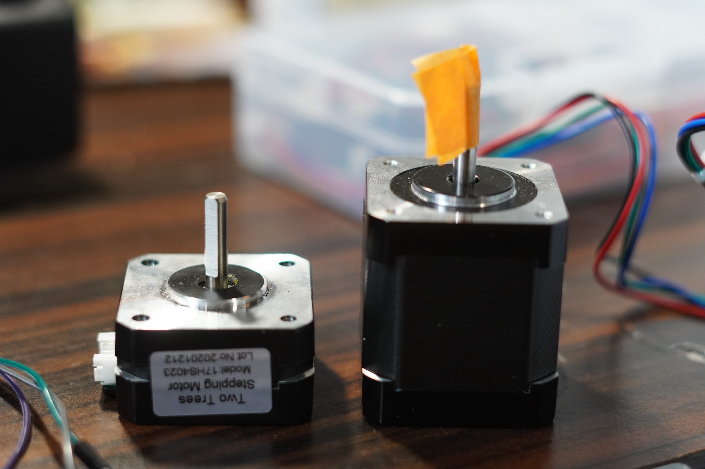
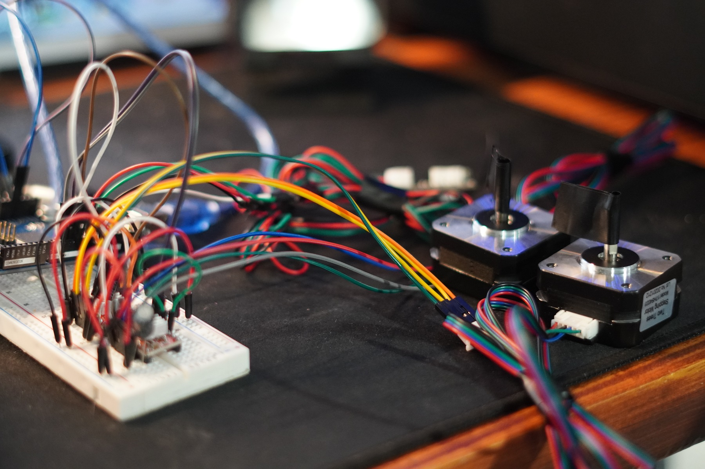
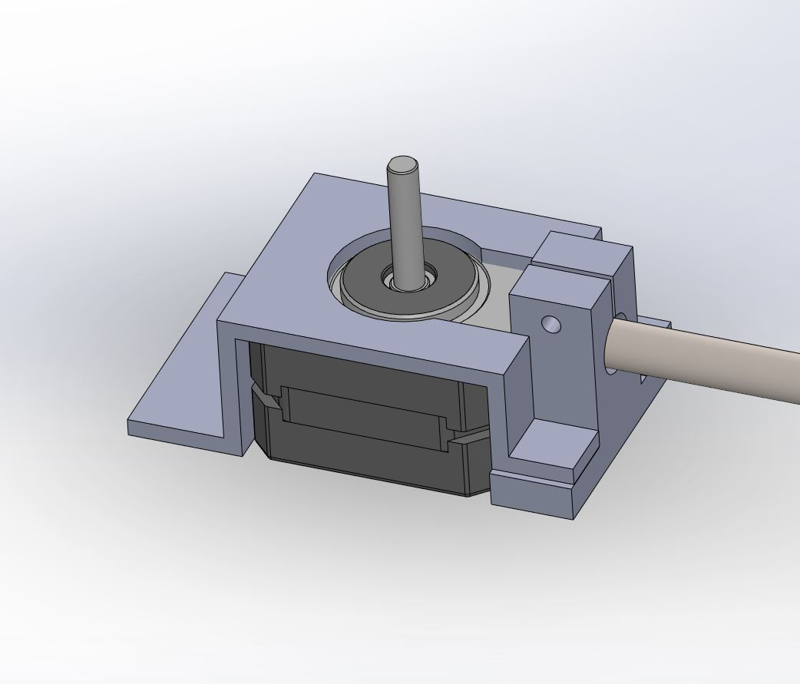
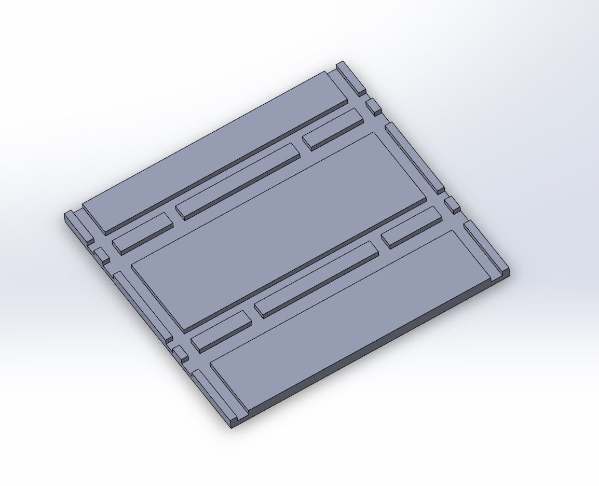
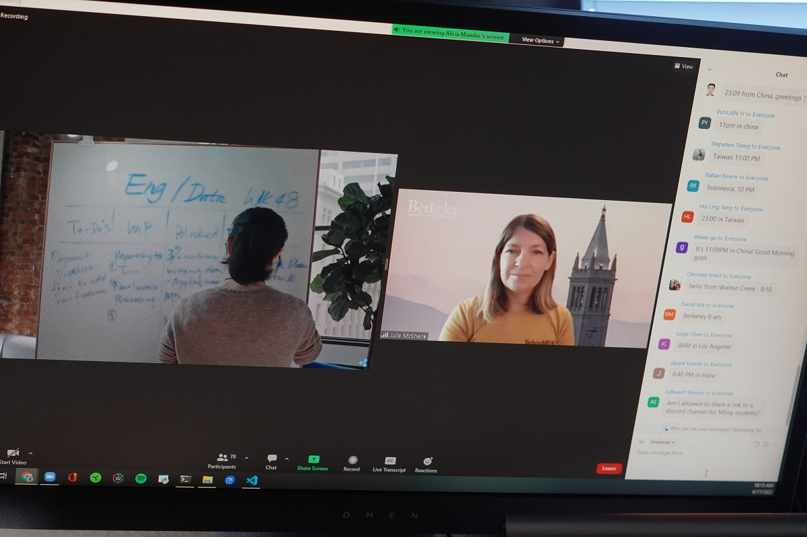
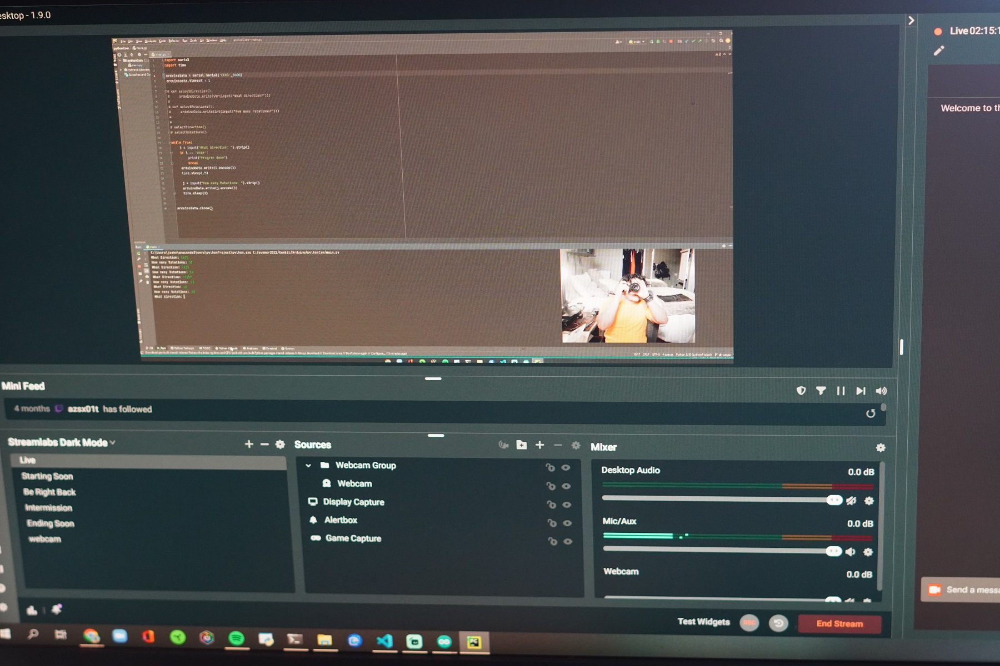

I was able to get working on Gambit again. I began designing some parts for it and ultimately have been able to narrow in on the approach of it.
Aside from working on Gambit, I had my first meeting corelating to Berkeley. It is still crazy to think I will be there this fall but I am beyond excited for it.
I also started streaming on Twitch. I thought it would be a nice way to further document my process, so if you ever want to check it out. My username is Gam6o on Twitch.
Gambit
I began testing the new set of motors I got in recently. The reason I transitioned to these motors is becuase I am trying to make Gambit significantly smaller.
 Downsizing, but upgradingThese motors will not provide nearly as much power as the old motors, but it is still more than enough for the purposes of moving an electromagnet. With these new motors up for grabs, I went ahead and rewired the motor and limit switch setup to put the motors to the test. They ended up working flawlessly and were significantly less noisy which was a unplanned benefit.
 Motor TestOnce I got these motors tested, I went ahead and began designing the motor mount that will be used on the board. I used some calipers and made some slight changes with tolerances in mind. Tomorrow I will be printing it out and testing it. I am sure I will be making some adjustments once I have it in hand.
 Motor MountThe last thing I did today with Gambit was start looking into creating a printed template for wiring the hall effect sensors. With my previous printer, I was not able to get a good template printed because of the size limitations I had. So I quickly modeled something that should make my life easier when it comes to soldering some wires together.
 Wire ManagementBerkeley
I had my first meeting that was related to Berkeley. Here, we heard from the head of engineering of some crypto company about leadership. I am extremely excited of what I will learn over the next year and am eager to see where it will lead me.
 Career MeetingStreaming
In an effort to hold me more accountable while I am in front of my screen, I started streaming on Twitch. I don't anticipate anyone watching, but having the thought of someone watching will make me work a bit harder. I think I will be streaming a few times a week and it will allow me to document the process of everything a bit more too which is always cool.
 StreamHabit Tracking
Today, I journaled, worked out, read, tracked my caloric intake, and worked on at least one of my personal projects. Today was a good day.
What I am thankful for
I am thankful having a new 3D printer. It has encouraged me to take better approaches to problems and I anticipate it being a great tool in my arsenal of things.